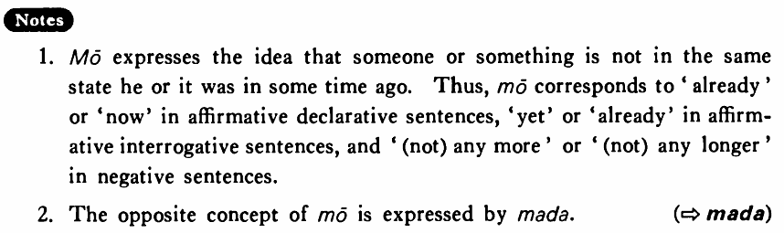

もう (B. 254)
- (ksa).
- 私はもう昼ご飯を食べた・食べました。
- I have already eaten my lunch.
- (ksb).
- ヒルさんはもう日本語を勉強していない・いません。
- Mr. Hill is not studying Japanese any longer.
- (a).
- A:もう宿題をしましたか。 B:はい、もうしました。
- A: Have you done your homework yet (or already)? B: Yes, I 've already done it.
- (b).
- 私はもう酒を飲みません。
- I won't drink sake any more.
- (c).
- 春男君はもう大丈夫です。
- Haruo is all right now.
